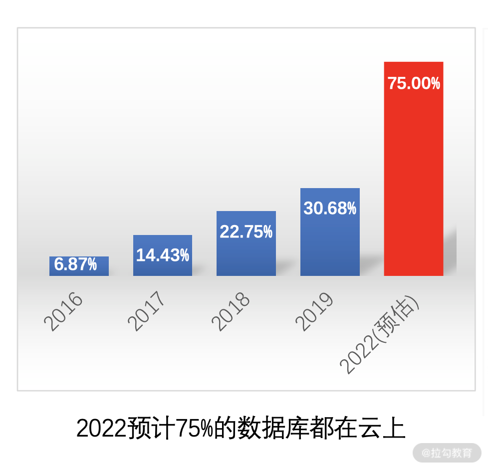
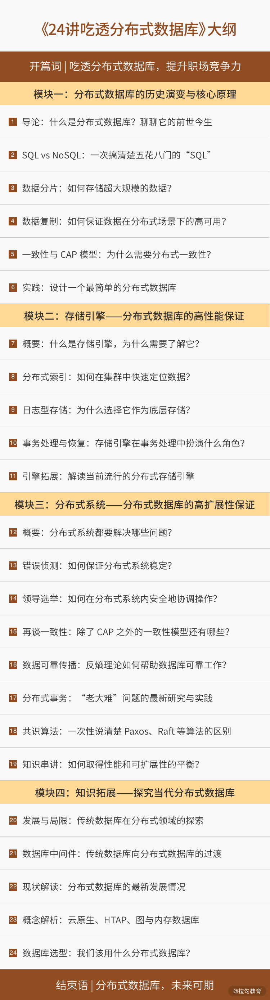

- 00 开篇词 吃透分布式数据库，提升职场竞争力.md.html
- 01 导论：什么是分布式数据库？聊聊它的前世今生.md.html
- 02 SQL vs NoSQL：一次搞清楚五花八门的“SQL”.md.html
- 03 数据分片：如何存储超大规模的数据？.md.html
- 04 数据复制：如何保证数据在分布式场景下的高可用？.md.html
- 05 一致性与 CAP 模型：为什么需要分布式一致性？.md.html
- 06 实践：设计一个最简单的分布式数据库.md.html
- 07 概要：什么是存储引擎，为什么需要了解它？.md.html
- 08 分布式索引：如何在集群中快速定位数据？.md.html
- 09 日志型存储：为什么选择它作为底层存储？.md.html
- 10 事务处理与恢复（上）：数据库崩溃后如何保证数据不丢失？.md.html
- 11 事务处理与恢复（下）：如何控制并发事务？.md.html
- 12 引擎拓展：解读当前流行的分布式存储引擎.md.html
- 13 概要：分布式系统都要解决哪些问题？.md.html
- 14 错误侦测：如何保证分布式系统稳定？.md.html
- 15 领导选举：如何在分布式系统内安全地协调操作？.md.html
- 16 再谈一致性：除了 CAP 之外的一致性模型还有哪些？.md.html
- 17 数据可靠传播：反熵理论如何帮助数据库可靠工作？.md.html
- 18 分布式事务（上）：除了 XA，还有哪些原子提交算法吗？.md.html
- 19 分布式事务（下）：Spanner 与 Calvin 的巅峰对决.md.html
- 20 共识算法：一次性说清楚 Paxos、Raft 等算法的区别.md.html
- 21 知识串讲：如何取得性能和可扩展性的平衡？.md.html
- 22 发展与局限：传统数据库在分布式领域的探索.md.html
- 23 数据库中间件：传统数据库向分布式数据库的过渡.md.html
- 24 现状解读：分布式数据库的最新发展情况.md.html
- 加餐1 概念解析：云原生、HTAP、图与内存数据库.md.html
- 加餐2 数据库选型：我们该用什么分布式数据库？.md.html
- 捐赠
00 开篇词 吃透分布式数据库，提升职场竞争力
你好，我是高洪涛，前华为云技术专家、前当当网系统架构师和 Oracle DBA，也是 Apache ShardingSphere PMC 成员。作为创始团队核心成员，我深度参与的 Apache ShardingShpere 目前已经服务于国内外上百家企业，并得到了业界广泛的认可。
我在分布式数据库设计与研发领域工作近 5 年，也经常参与和组织一些行业会议，比如中国数据库大会、Oracle 嘉年华等，与业界人士交流分布式数据库领域的最新动向和发展趋势。
近十年来，整个行业都在争先恐后地进入这个领域，从而大大加速了技术进步。特别是近五年，云厂商相继发布重量级分布式数据库产品，普通用户接触这门技术的门槛降低了，越来越多人正在参与其中，整个领域生态呈现出“百花齐放”的态势。

2021 年数据大会上，阿里云发布了分布式数据库使用率统计图
学好分布式数据库将给你带来哪些机会？
但在生产实践过程中我们会发现，许多技术人员对分布式数据库还停留在一知半解的状态，比如下面这些疑问：
- 听说 MongoDB 比 MySQL 好用，但它适合我的业务吗？
- TiDB 与阿里云 PolarDB 看起来都支持 MySQL 语法，它们之间有什么区别呢？应该如何选择？
这本质上就是由于缺乏对分布式数据库基本原理的了解，容易导致使用该种数据库时问题频发。好比 Apache Cassandra 或 Azure CosmosDB 都支持多种一致性，但如果不了解分布式一致性模型，你很有可能会选错，从而造成业务数据不一致等问题。
也因此长久以来，业界一直存在一个典型的误解：分布式数据库只能遵循 CAP 原则，无法实现传统数据库的 ACID 级别的一致性，我的业务无法迁移到分布式数据库上。
而事实上，现代分布式数据库（特别是 NewSQL 类数据库），已经可以在一定程度上解决这一问题了。（我会分别在第 5 讲和第 15 讲中和你讨论一致性模型，你会获得想要的答案。）
虽然传统数据库中，大多数会使用复制同步技术来提高查询性能和可用性，但这些技术像一堆“补丁”，对已经不堪重负的传统数据库进行修修补补，解决问题有限的同时，反而可能带来更多问题（比如，复制延迟会长期困扰 MySQL 的复制高可用方案）。
而分布式数据库，基本上是从底层开始，针对分布式场景设计出来的，因此从基础层面就可以解决传统数据库的一些棘手问题。虽然初期投入相对大一些，却可以保证后续技术体系的健康发展，在长期成本上具有显著优势。
此外，分布式数据库好比一个“百宝箱”，其中蕴含了独具特色的设计理念、千锤百炼的架构模式，以及取之不尽的算法细节。随着分布式数据库迅猛发展，越来越多的研发、产品和运维人员或多或少都会接触分布式数据库，因此学好分布式数据库，也会为你提升职场竞争优势带来帮助，成为你技术履历上的闪光点。
- 对于数据库工程师，除了日常使用，相关面试中常常会涉及设计数据库集群架构、保障数据库的横纵向扩展等内容，因此理解主流分布式数据库原理和相关案例，会帮助你完美应对。
- 对于云产品经理，掌握目前商用与开源领域中主流的分布式数据库原理同样非常重要，这是规划和设计相关云产品的前置条件。
- 甚至在一般概念里，不与后端数据库直接打交道的移动 App 研发，想要解决多终端共享数据的同步问题，都可以从分布式数据库原理中获取灵感。
- 当进行系统运维支撑时，如果清楚分布式数据库内部到底发生了什么，将有助于设计合理的支撑策略。在处理具体问题时，也会更加得心应手。
学习过程中有哪些难点？
不过，分布式数据库的学习曲线非常陡峭，你会发现与其他知识类型相比，它有一个显著的区别，就是：学习资料过于丰富，且难度普遍不低。
- 由于数据库技术已经发展多年，其演化的分支过于庞杂，每个研究人员都会结合自身的专业背景与技术领域来解释分布式数据库。因此，将这些复杂的背景知识了解透彻，就成了大多数人深入这一领域的难题。
- 同时，该领域学术化气氛浓厚，因此大量核心技术是以论文的形式进行表述的，不仅内容晦涩，且大部分为英文，这也为探索核心理论提高了门槛。
- 还有一些课程往往注重 DBA 方向的培养，且一般限定在某个特定的数据库中（如云厂商数据库认证或 Oracle DBA 认证培训等），并没有抽象出一些共有的特性，方便大家掌握分布式数据库的核心理念。
这也在一定程度上导致人们对分布式数据库这一概念“误解”不断。不过，这也坚定了我想要帮助你了解通用分布式数据库的设计原理，借此带你重新审视业务实践的决心。
学习本课程后，你将对技术选型、系统架构设计，以及如何解决关键的技术难题有更为清晰的方案；在晋升评审&面试求职中，也能更加从容地应对相关技术问题。
我是如何设计这个课程的？
由于分布式数据库内涵丰富，知识结构繁杂，为使你能高效了解和掌握其中的关键信息，我采用了三种思路来设计这个课程。
- 化繁为简。去掉过时、不重要的技术细节，直接讲解与分布式数据库有关的内容，但同时我也会引导你去发现技术背后的细节，希望可以授人以渔。
- 知识全面。内容不仅仅介绍了分布式理论相关内容，同时介绍了一般资料少有提及的存储引擎，两者共同配合，才造就了分布式数据库高性能和高扩展性的特点。
- 注重实际。本着将技术理念与实际案例结合的精神，在介绍技术细节时，我会联系相关的分布式数据库，从多方位打通你的知识体系。
基于以上设计思路，我把课程分为 4 个模块，合计 24 讲。
- 模块一，分布式数据历史演变及其核心原理。从历史背景出发，讲解了分布式数据库要解决的问题、应用场景，以及核心技术特点。
- 模块二，分布式数据库的高性能保证——存储引擎。这是专栏的亮点内容，简要展示了现代数据库的存储引擎，比如典型存储引擎、分布式索引、数据文件与日志结构存储、事务处理。其中，我会特别介绍分布式数据库与传统数据库在存储层面上的差异。学完之后，你会对分布式数据库中的重要特性（如一致性和分布式事务）有一个完整的理解，明白为什么一些特定存储引擎（如日志结构存储）更适合去构建分布式数据库。
- 模块三，分布式数据库的高扩展性保证——分布式系统。详细介绍分布式数据库中所蕴含的系统设计原理、算法等，包含但不限于错误侦测、领导选举、数据可靠传播、分布式事务、共识算法等内容。虽然分布式内容很多，但我不会面面俱到，而是帮你提炼精华，基于实例为你建立知识体系。
- 模块四，知识拓展。我会和你探讨当代最成功的分布式数据库（传统&新型），探讨它们成功的关键，同时将它们与之前模块中所介绍的技术原理进行相应的映射，让你的知识体系更加丰富。

讲师寄语
本课程的设计目标是，尽最大程度解决你的实际问题，让你在不同的工程实践中，对分布式场景下的数据库存储有更加专业的认知，并对技术趋势建立深入的洞察。
© 2019 - 2023 Liangliang Lee. Powered by gin and hexo-theme-book.